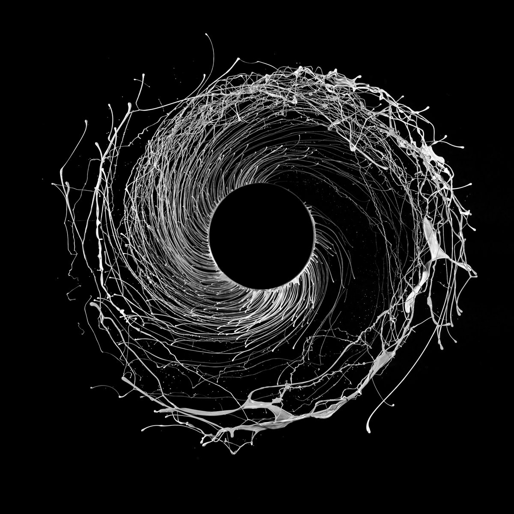

Dawn of Midi are technically a jazz trio — three young if older than their years talented musicians on piano, drums and double bass. The sounds they make, however, are infinitely more boundary-pushing than the sort of freeform noodling that sometimes give the term “jazz trio” a bad name. Here, rhythms are delivered, repeated and built with a fractal precision that makes for music as menacing as it is meditative. It’s exploratory without ever seeming uncertain; it sounds like nothing else right now and listening to it is to experience a very welcome warping of time.